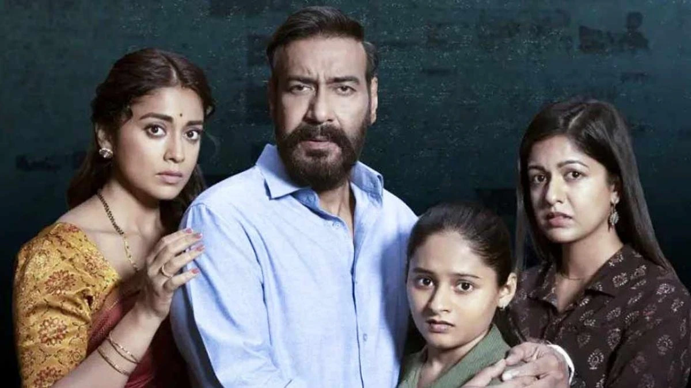

A fearless warrior on a perilous mission comes face to face with a steely cop serving British forces in this epic saga set in pre-independent India.
During the British era, Malli, a small tribal girl, is taken away by British governor Scott Buxton and his wife Catherine against the wishes of her mother. Rama Raju is an Indian cop who works for the British army; for him duty comes first, and he is very ruthless to revolutionary Indians but is never given his due by British government. The British government find that a tribal Komaram Bheem, who considers Malli his sister, has started his search for her and could be an obstacle for the British army. The governor and his wife announce a special post for any officer who can bring Bheem to them. Rama Raju decides to take the matters into his own hands and promises the government to bring him in dead or alive. Bheem by now has reached he city in search of Malli and pretends to be a mechanic, Akhtar. During a train accident on a lake he and Rama Raju risk their lives and save a kid and become best of friends. But each man will clash with the other and will thirst for each other's blood in order to complete their missions.
India, 1920. Determined to reunite Malli, an abducted Gond girl, with her mother, the tribe's fearless defender, Bheem, sets foot in vast Delhi using a new identity. But the British have the population under their thumb. As a result, ruthless Governor Scott Buxton entrusts Rama Raju, a hard-as-nails police officer, with a vital task: work undercover to ferret out an unknown Gond warrior. And before long, Bheem and Raju have a chance encounter at an accident site, and they immediately bond. However, as the two bosom friends embark on a peril-laden rescue mission in Delhi's bustling streets, utterly unaware of each other's true identity, pressing questions arise. What happens if one of the mighty companions blows his cover? In the battle royal between fire and water, who would win?
In 1920, British Governor Scott (Ray Stevenson) and his wife Catherine (Alison Doody) visit a forest in Adilabad and forcefully take away Malli (Twinkle Sharma), a young girl with a gift for singing, from the Gond tribe. Edward (Edward Sonnenblick) is the special PA to the Governor. The tribe's protector Komaram Bheem (N. T. Rama Rao Jr.) (A Gond tribal leader from Telangana who fought against the Nizam of Hyderabad for the liberation of Hyderabad State) tracks her down to Delhi, disguising himself as Akhtar, a Muslim with the help of a family in search of her. Bheem's companions include Jangu (Chatrapathi Sekhar) and Peddanna (Makarand Deshpande)
The Nizamate of Hyderabad (via Venkat Avadhani (Rajeev Kanakala), special advisor to the Nizam) warns Scott's office about Bheem's mission. Police officer Alluri Sitarama Raju (Ram Charan) volunteers to catch Bheem in order to get a promotion. Ram is a staunch and upright police officer and has put his life on the line to serve the crown but has never received due credit for his work and dedication. He always overlooked for promotion opportunities which are instead given to British officers. The British are in a fix over Bheem as they have no file on him, and don't even know what he looks like. So, Catherine announces that the officer who arrests him will be promoted to the rank of special officer. Ram fixates on a strategy to let Bheem come to him, by posing as an enemy of the crown. Ram attends a meeting of independence activists and proposes to assassinate Scott. Bheem's aide Lachhu (Rahul Ramakrishna) asks Ram to join them. However, he flees after realizing that Ram is a police officer.
Ram and Bheem coincidentally meet, working together to save a boy caught in a train crash. They bond with each other while hiding their original identity. Ram helps Bheem to get close to Scott's niece Jenny (Olivia Morris). Bheem had noticed that Jenny is kind to Indians and plans to use her to infiltrate the Governor's palace. Ram punctures Jenny's car tires and gets her to ask for a lift with Ram, to help him get close to her. Bheem visits the governor's palace on Jenny's invitation, where he silently meets Malli and assures her rescue.
Ram figures out that Lachhu works in a painting shop and tracks him down. He captures Lachhu, torturing him in vain to find information about Bheem. Lachhu gets hold of a banded Krait snake and throws it onto Ram. Lacchu warns Ram that its bite will quickly kill him without anti-venom, known only to the Gond people. Ram finds his way to Bheem, who treats him and confesses his true identity and mission to him. Bheem and his men break into the palace with a truck full of wild animals. Ram arrives as an officer and confronts Bheem who fights him off and attempts to rescue Malli. Ram stops him while Scott holds Malli hostage at point-blank range, forcing Bheem to surrender.
In a flashback, Ram's father, Venkata Ramaraju (Ajay Devgn), is shown to be a rebel (A revolutionary leader from Andhra Pradesh who waged an armed campaign against the British Raj) who sacrificed his life fighting the British. Sarojini (Shriya Saran), Rama Raju's mother. Venkata was raising a rebel army and was training it but lacked arms and ammunition to wage a war. Before this can be arranged, the British attack his training camp and Venkata only has 1 rifle to battle them. Venkata fights valiantly and keeps the Brits at bay while the camp evacuates. The Brits manage to shoot his fingers. Ram joins Venkata and proves that he is an expert sharpshooter. Sarojini dies during the escape, but Venkata and Ram keep on fighting and allowing more and more villagers and campers to escape. Eventually, the British retreat. Ram promised a dying Venkata that he would deliver guns to everyone taking part in the rebellion, and then infiltrated the colonial police in an attempt to secure those weapons.
Ram is promoted for capturing Bheem, who is sentenced to death via public execution. During a brutal public flogging session conducted by Ram, Scott offers Bheem mercy if he kneels and recants his crimes but Bheem refuses despite being heavily injured. He sings a defiant song that inspires a popular uprising. Ram is informed that he will be placed in charge of a large arms shipment, granting him the opportunity to steal a large number of British guns. However, Ram feels guilty and decides to use the opportunity to save Bheem and Malli instead. He asks Scott to execute Bheem on the outskirts of the city, during which he stages an ambush. Scott recognizes this ploy (when Scott shook Ram's hand, he felt grease which came when Ram tampered with the firing pins of the guns) and injures Ram. Bheem frees himself and fights the remaining guards while Ram shoots and kills a guard menacing Malli. Misinterpreting this to be an attack, Bheem knocks out Ram and escapes with Malli.
A few months later, Bheem and his men are hiding in Hathras. When British soldiers arrive looking for Bheem, Sita (Alia Bhatt), Ram's cousin and fiance, senses the danger and drives away the British by telling them that the building is housing smallpox patients. She tells Bheem that Ram now faces a death sentence for saving his best friend. Bheem regrets his actions and promises Sita that he will rescue Ram.
Bheem sneaks into the barracks with the help of blueprints given by Jenny. He frees Ram from the prison, mounting him on his shoulders (since Scott had ordered his legs broken) to transport him. Together, they fight the police and escape. As Bheem treats Ram in the woods, they are ambushed by police and special forces soldiers. Ram takes a bow and arrows from a shrine of Lord Rama and retaliates. Bheem joins him with a spear. They fight off the soldiers and head towards the palace, eventually destroying the building by blasting a motorcycle into a room full of TNT. Bheem retrieves a massive cache of guns and delivers them to Ram. Catherine is killed in the chaos while Scott is killed by Ram and Bheem.
They reunite with Sita, Jenny, and their allies. Ram promises to educate Bheem. Ram returns to his village and delivers the weapons, fulfilling his promise, while Bheem returns to his hamlet, reuniting Malli with her mother.
|  |